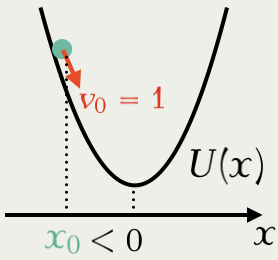
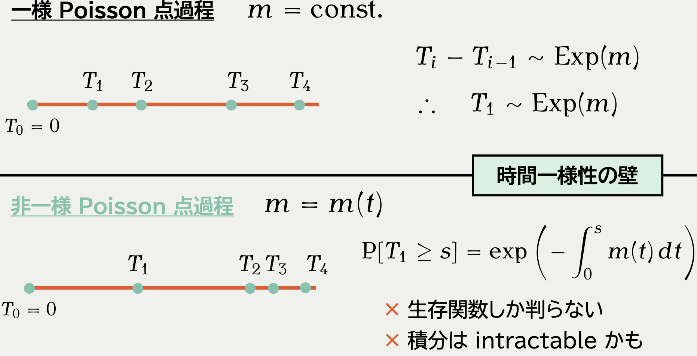
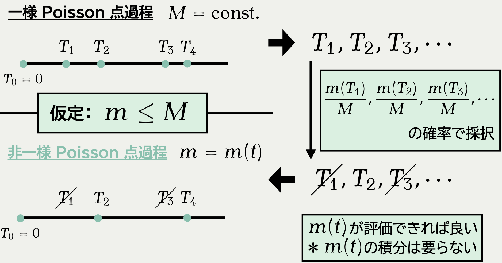
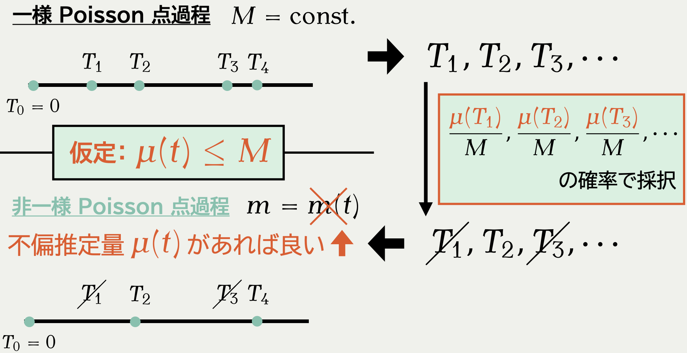

1 区分確定的マルコフ過程 PDMP

PDMPFlux.jl パッケージからの出力．A Blog Entry on Bayesian Computation by an Applied Mathematician
$$
$$
1.1 モンテカルロ法３分類


1.2 Piecewise Deterministic Markov Process

1.3 モンテカルロ法小史 1/2

1.4 モンテカルロ法小史 2/2
1.5 拡散過程の何がダメなのか？
1.6 PDMP の何が良いのか？

1.7 PDMP の何が難しいのか？
1.8 初の PDMP 汎用パッケージ
Python パッケージ（Charly Andral）
pip install pdmp-jaxJulia パッケージ（申請者開発） 
] add PDMPFlux1.9 PDMP の例 1/2 （申請者開発のパッケージより）

1.10 PDMP の例 2/2 （申請者開発のパッケージより）


このあとの内容
- 第１節：区分確定的マルコフ過程 PDMP （終わった）
- PDMPFlux パッケージの紹介
- 第２節：PDMP のシミュレーションと課題 これから
- ○ データの一部を見るだけで実行可能（スケーラビリティ）
- 自動化・汎用化することが難しい
- 第３節：本パッケージの実装
- 鍵となる技術：自動微分のベクトライズ
2 PDMP のシミュレーションと課題
2.1 課題：非一様 Poisson 点過程のシミュレーション

2.2 直観：１次元の場合

１次元の Gauss 分布を考える：
\pi(x)=\frac{1}{\sqrt{2\pi\sigma^2}}e^{-\frac{x^2}{2\sigma^2}} \therefore\quad U(x):=-\log\pi(x)=\frac{x^2}{2\sigma^2}+\mathrm{const.}
負の対数尤度 U=-\log\pi は ポテンシャル ともいう．
\begin{align*} m^{(1)}(t)&=(v_0\cdot U'(\textcolor{#78C2AD}{x_0}+\textcolor{#E95420}{v_0}t))_+\\ &=(\textcolor{#78C2AD}{x_0}+\textcolor{#E95420}{v_0}t)\cdot1{\left\{\textcolor{#78C2AD}{x_0}+\textcolor{#E95420}{v_0}t>0\right\}},\quad t\ge0, \end{align*} を強度にもつ 非一様 Poisson 点過程 の最初の到着時刻 T_1^{(1)} について，\textcolor{#78C2AD}{x_1}=\textcolor{#78C2AD}{x_0}+\textcolor{#E95420}{v_0}T_1^{(1)} とすれば良い．
2.3 課題：非一様 Poisson 点過程の到着時刻の計算

2.4 解決法：剪定 (Lewis and Shedler, 1979)

2.5 拡張：確率的剪定 (Sen et al., 2020)

2.6 PDMP の美点：スケーラビリティが達成可能
m(t)=\biggr(-v\cdot\nabla\log\pi(\textcolor{#78C2AD}{x_{i-1}}+tv)\biggl)_+,\quad t\ge0, を強度に持つ非一様 Poisson 点過程をシミュレートする．
既存研究：確率的剪定 (Bierkens et al., 2019), (Sen et al., 2020)
2.7 新課題：汎用的な上界 M の見つけ方が存在しない
m(t)=\biggr(-v\cdot\nabla\log\pi(\textcolor{#78C2AD}{x_{i-1}}+tv)\biggl)_+,\quad t\ge0, を強度に持つ非一様 Poisson 点過程をシミュレートする．
既存研究：確率的剪定 (Bierkens et al., 2019), (Sen et al., 2020)
今回の貢献：適応的剪定
(Andral and Kamatani, 2024)
3 PDMP のシミュレーションの自動化（今回の貢献）
3.1 適応的剪定（従来法）(Corbella et al., 2022)
\displaystyle\max_{t\in[0,t_{\text{max}}]}m(t) の計算に最適化が必要
t_{\text{max}} の調整アルゴリズム？
3.2 本パッケージの実装

○ 最適化フリー＋自動微分のベクトライズで高速化可能
○ 自動的かつ汎用的なアルゴリズム
まとめ
2025年，機械学習・統計でも動き出す……？
参考文献
HMC との関係
- Metropolis-Hastings ステップでは，尤度の比が 1 ならば棄却されない．
- そこで尤度の等高線をなぞることを考える．
- 運動量をランダムにサンプリングすることでエルゴード性を担保する．
ただし尤度の等高線をなぞることは数値計算の問題になり難しいが，ハイパーパラメータをうまくチューニングすることでほとんど独立なサンプルを得ることができる．
従来的には MCMC の１つとみれるが，ダイナミクスを複雑にした PDMP と見るべきかもしれない．
- 尤度の等高線をなぞるダイナミクス
- → 尤度の幾何情報を自然に取り入れた動きが可能
- 運動量をリフレッシュするタイミングについての示唆？